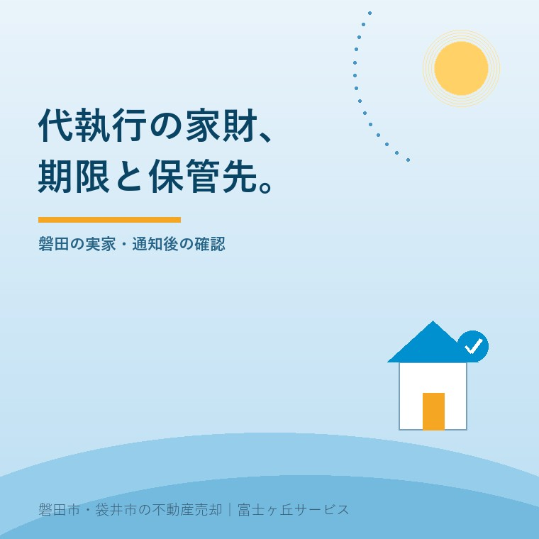

空き家の代執行、家財はどうなる？磐田の実家
2026年10月2日｜カテゴリ：空き家・実家じまい

この記事の要点
市が実家を壊すと言っている。中の家具や写真は全部捨てられるの？
家財が一律に処分されるとは限りません。まず通知の措置範囲と搬出期限を確認し、残したい物を市へ伝えます。価値ある物等の保管が考えられますが、全国共通の保管日数はありません。磐田市・袋井市・森町では、介護施設の運営から不動産事業を始めた富士ヶ丘サービスのような地域密着の会社に相談する選択肢があります。
大石浩之（磐田市／不動産業）です。無人の実家について市から通知が来ると、解体の費用と同時に、室内の物が気になります。たんすを処分する話と、写真や書類を失わない話は別です。家の中を確認する前に、まず通知の担当者へ連絡する順を考えます。
本記事は2026年10月2日確認の国土交通省の指針を基に、家財の搬出期限と保管先の確認に絞ります。磐田市・袋井市で個別の代執行案件が発生したと報じる記事ではありません。ここで市ごとの保管場所や期間を決めつけることもできません。
2026年9月改正の指針は、家財を分けて扱う
国土交通省の関連情報ページは、措置に関する指針の最終改正日を2026年9月3日としています。正式名称は「管理不全空家等及び特定空家等に対する措置に関する適切な実施を図るために必要な指針」です。家財の扱いは第4章6（5）「動産等の取扱い」にあります。
動産は、建物に対して、家具や室内の持ち物などの動かせる財産です。指針の本文34～35頁は、建物全部の除却と、全部除却ではない作業で動産が支障となる場合を分けています。改正日が新しいからといって、家財の規定が2026年9月に新設されたとは確認していません。
私は、建物を取り除く工程の中でも、動産を別に扱う考え方が示されている点を評価します。解体する建物の中にある物だから、全部同じごみだという整理にはしていません。所有者が運び出すことや、価値ある物等の保管を考える余地があります。
その上で、家族への案内が「片付けてください」だけで止まるなら足りないと考えます。いつまでに、どの範囲を、誰と調整して搬出するかが分からなければ、遠方の家族は車も業者も手配できません。通知の読み方を、市へ聞ける具体的な質問に変えたいところです。
なお、管理不全空家等の段階と、特定空家等に対する代執行は混同しません。税負担を含む違いは、管理不全空家と実家の管理を整理した記事を併せて確認してください。市から郵便が来たというだけで、代執行が決まったとは読みません。
通知の表題と搬出期限を照合する
建物全部を除却し、命令が動産への措置を含む場合、国土交通省の指針は戒告書等に搬出・処分等の期限を明記することが望ましいとしています。基準となるのは履行期限、または代執行を始める日です。家族が好きな日を選べるという意味ではありません。
戒告書は、期限までに義務を果たさなければ代執行を行う旨などを知らせる文書です。代執行令書は、執行時期などを知らせる文書です。手元の紙の表題、発行日、対象の建物、命令内容、期限を並べ、市の担当者へ読み上げて照合します。
| 見る欄 | 市へ聞く質問 | 家族が残す記録 |
|---|---|---|
| 措置の範囲 | 建物全部の除却か。家財への措置も含むか | 通知の該当箇所 |
| 履行期限・開始日 | 家族が搬出を終える期限はどの日か | 年月日と担当者名 |
| 立入り・搬出 | 立入りできる条件、作業との調整先はどこか | 日時・方法・安全上の条件 |
| 残す物 | 引取りたい物をどう連絡すればよいか | 物の一覧と送付日 |
私は、口頭で「来月ごろ」と聞いた場合でも、実際の期限を年月日に直して確認するよう案内します。電話した日付、回答した担当者、家族側の窓口を一枚に残します。家族から連絡すれば期限が自動で延びる、と期待して予定を組まないためです。
通知を受けた人が持ち主本人とは限らない場合は、誰が所有者として対応できるかも聞きます。親族だという理由だけで、他人の物まで捨てる判断はしません。相続や物の所有関係に迷う部分は、通知を持って弁護士などの専門家に確認を。
保管する物と作業の支障になる物は別
国土交通省の指針は、相当の価値がある動産や、社会通念上処分をためらう動産について、保管し、所有者に期限付きで引取りを連絡する対応が考えられるとしています。一方、廃棄物や危険のおそれがある物のうち所有者が引き取らないものは、関係法令に従う処理を示します。
意外なのは、保管期間を全国共通の何日と定めていないことです。他法令や裁判例を参考に、法務部局と協議して適切に定める扱いです。「市が保管するなら、あとでゆっくり取りに行ける」とは考えません。保管を予定する物、場所、期限、引取り方法を一組で聞きます。
家族にとって大切な写真や手紙が、どの扱いになるかはこの記事から判定できません。私は、残したい理由と物の所在を先に伝えることを勧めます。「二階に何かある」ではなく、確認できる範囲で部屋、棚、箱の特徴を書けば、照会する対象を特定しやすくなります。
全部除却ではない措置で、物が作業の支障になる場合は、建物内や敷地内等の適切な場所への移動が望ましいとされています。移動は、処分や長期保管と同じではありません。屋外に移せば保全できるか、雨や盗難への対応はどうするかを、担当者と確認します。
磐田・袋井の家族は、搬出先から決める
磐田市・袋井市にある実家の家財を動かすときは、搬出期限だけでなく受け入れ先も必要です。家族宅へ持ち帰る物、別の場所で保管する物、処分を検討する物を分けます。以下は国の義務を追加する話ではなく、私が家族の段取りとして勧める整理です。
私はこう考えます。家を壊す話と、家族の物を手放す話は、同じ段取りにしてはいけない。解体の工程が決まったからといって、家族の気持ちまで一緒に決まるわけではありません。ただし、決められない物を残したまま期限を過ぎるのも避けたい。先に運び出す物と、その判断をする人を決めます。
私も、何を残すべきかを家族に代わって決められるかといえば、迷いがあります。金銭的な価値と家族の価値は一致しません。だから、片付け業者への依頼書にも「処分対象外」を書き、残す物の写真や一覧を共有する方法を提案します。実際に起きた相談の再現ではなく、私の意見です。
家財の整理を始める家族は、実家の遺品整理と家族の合意を考える記事も参考にできます。今回の期限の照会とは別に、家族が何を残すか相談する時間を確保します。危険な建物へ無理に入って確認する段取りは取りません。
見積りでは搬出、運搬、保管、処分の対象と料金を分けて聞きます。市の代執行費用と、家族が自分で依頼する作業費を同じ欄に入れない方が、重複や漏れを見つけやすくなります。解体前の確認事項は、実家の解体費用を整理した記事につながります。
今日、市へ聞くことを一枚にする
家財の確認で今日できることは、通知と残したい物の一覧をそろえ、通知に記載された市の担当者へ照会することです。保管場所をインターネットの一般例から推測する必要はありません。回答が未確定なら、決まる時期と連絡方法を聞いて記録します。
- 通知の措置範囲と搬出期限を年月日で照合する。
- 残す物、搬出する人、受け入れ先を整理する。
- 市が保管する場合の対象・場所・期限・引取り方法を聞く。
- 立入りの安全と家族の連絡窓口を確認する。
私は、売るかどうかの相談より先に、失いたくない物と通知への対応を分けるよう案内します。富士ヶ丘サービスは磐田・袋井の地域に根差し、介護と不動産を一体で相談できる窓口です。家族が困らない売却のためにも、まず動ける段取りを整えます。
よくある質問
請求や準備で迷う点を整理します。
- 家財は市が全部保管してくれますか？
- 全部を保管する制度とは読めません。国土交通省の指針は、相当の価値がある物や社会通念上処分をためらう物について、保管と期限付きの引取り連絡を考えられる対応としています。何を保管するか、どこでいつまで保管するかは個別に確認します。残したい物の一覧を通知の担当者へ伝えてください。
- 家財の保管期限は全国一律で何日ですか？
- 今回確認した指針には、全国共通の日数はありません。保管期間は他の法令や裁判例も参考にし、法務部局との協議などで適切に定める扱いです。通知の搬出期限と、代執行後の引取り期限を分けて聞いてください。期限内の連絡だけで延長が決まるとは限らないため、引取り方法と必要書類も市へ確認します。
- 写真や仏壇だけ先に取りに入ってよいですか？
- 取り出したい物は先に市へ伝えますが、立入りの安全や作業への影響を確認せずに入ることは勧めません。家の状態、立入可能な日時、同行の必要、搬出できる範囲を通知の担当者へ相談します。物の所有者や相続人の間で扱いに争いがある場合は、家族だけで処分せず、弁護士などの専門家に確認を。

この記事を書いた人：大石浩之（磐田市／不動産業・宅地建物取引士）
富士ヶ丘サービス株式会社。介護施設の運営から不動産事業を始め、磐田市・袋井市・森町で、介護と相続、実家の売却を一体で相談できる窓口を設けています。家族が困らない売却のため、資料と現地の条件を一件ずつ整理します。著者プロフィール
本記事は2026年10月2日時点の公開情報と筆者の意見です。制度・数値・手続き・契約条件は変更されることがあります。税務・登記・相続・重要事項説明・契約などの個別判断は、税理士・司法書士・弁護士などの専門家に確認を。